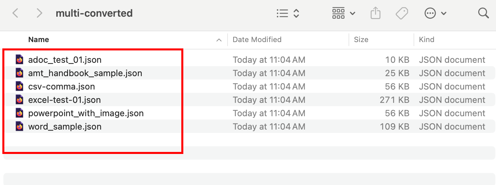

Multi-format Conversion
Docling supports automatically detecting supported input formats and converting them to several output formats amenable for ingestion into LLMs.
See Supported Input and Output Formats page for the full list of input and output formats supported by Docling.
You can control the allowed input formats using the allowed_formats parameter to the DocumentConverter class:
...
doc_converter = (
DocumentConverter(
allowed_formats=[
InputFormat.PDF,
InputFormat.IMAGE,
InputFormat.DOCX,
InputFormat.HTML,
InputFormat.PPTX,
InputFormat.ASCIIDOC,
InputFormat.CSV,
InputFormat.MD,
],
...Input formats not listed in the allowed_formats list are ignored. You can also simply use Python’s glob method in the Path class to filter out files you don’t want converted:
...
allowed_extensions = ["*.pdf", "*.docx", "*.xlsx", "*.pptx", "*.csv", "*.asciidoc"]
...
input_doc_paths: list[Path] = []
for ext in allowed_extensions:
input_doc_paths.extend(input_path.glob(ext))
...Pre-requisites
-
The Docling Python library must be installed as outlined in the previous sections using
pipin a Python virtual environment -
Git CLI to clone the sample data files from GitHub
-
Visual Studio Code, or other editors to edit Python code
Lab: Convert Multi-format Documents
-
If you have not already done it, clone the Git repository containing the sample documents that should be converted, to a folder of your choice.
$ git clone https://github.com/RedHatQuickCourses/genai-apps.git -
All the sample input files and code is in a folder called
dataprep. Change to this folder in the terminal.$ cd genai-apps/dataprep -
If you have previously created a virtual environment and installed Docling, activate the venv.
$ source venv/bin/activateYour prompt should change to indicate that you are now running in an isolated virtual environment.
-
Inspect the
multi-format.pyfile in VS Code. The input documents are in thesample-data/multi-formatfolder. The output documents will be placed in the/tmp/multi-convertedfolder.INPUT_DIR = "sample-data/multi-format" OUTPUT_DIR = "/tmp/multi-converted" -
Create a list of supported file formats and filter them using the
globmethod on thePathclass:... allowed_extensions = [".pdf", ".docx", ".xlsx", ".pptx", ".csv", ".asciidoc"] ... input_doc_paths: list[Path] = [] for ext in allowed_extensions: input_doc_paths.extend(input_path.glob(ext)) ... -
Use the
convert_allmethod in theDocumentConverterclass to convert all the input documents toDoclingDocumentobjects.... doc_converter = DocumentConverter() conv_results = doc_converter.convert_all( input_doc_paths, raises_on_error=False, ) ... -
Finally, export the in-memory representation of the
DoclingDocumentobjects to JSON format.... for conv_res in conv_results: out_file_name = conv_res.input.file.stem conv_res.document.save_as_json( output_path / f"{out_file_name}.json", image_mode=ImageRefMode.PLACEHOLDER ) ) ... -
Run the program. You can safely ignore any warnings emitted.
$ (venv) python3 multi-format.py -
Once the program completes, you should see Markdown files in the
/tmp/multi-convertedfolder corresponding to the input files with a*.jsonextension. Preview the converted JSON files in VS Code, and verify that the documents are converted correctly. Hierarchial elements (headings, tables, paragraphs) in the input are converted to corresponding nested JSON objects in the output.Figure 1. Multiple formats converted to JSON files